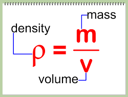

실험노트 - 액체와 고체의 밀도 측정 및 정밀도(precision), 정확도(accuracy) 구하기
어떤 물질의 물리적 성질은 위키피디아에 의하면 다음과 같다.
- 물리적 성질
- 위치, 전기장, 끓는점, 녹는점, 팽창, 이동, 질량, 압력, 색, 밀도, 부피, 길이, 강도, 온도, 비중, 열전도율, 비열, 선팽창계수, 자성, 전기전도율, 열전도율
이 노트에 기술되는 실험은 어떤 용매의 물리적 성질 중 밀도를 측정하고 이에 대한 정확도와 정밀도를 구하는 것이 목적이다.
실험1: 밀도 측정
어떤 물질의 정체를 모를 땐 밀도를 재면 알 수 있다. 마치 아르키메데스의 원리(부력의 원리)와 같다.
- 부력의 원리
- 물체의 부분(혹은 전체)이 유체에 잠기면 그 물체가 차지하는 부피에 상응하는 물의 무게 만큼의 힘이 물체에 가해진다는 원리 
- 각 물질들은 고유한 밀도를 가지고 있다.
- 어떤 두 물질의 부피가 같다면, 위 수식에 의해 밀도가 클수록 질량이 크다.
- 순금처럼 일반적으로 사각형인 물질은 측정이 용이하지만 금관같은 모양이 복잡한 물질은 부피 측정이 어렵다. 하지만 같은 질량일지라도, 다른 물질이라면 밀도가 다르므로 부피가 다를 것이고 같은 물질이면 부피가 같아야 한다.
사용할 용매는 아이소프로판올(isopropyl alcohol), 다이메틸 설폭사이드(Dimethyl sulfoxide;DMSO), 에탄올(EtOH)이다.
주어진 용매의 밀도를 측정하기 위해 10mL 파이펫을 이용해 용매를 Aspiration한 후, 밸런스와 50mL 비이커를 이용하여 무게를 잴 것이다.
- TD와 TC개념
- TC는 to contain을, TD는 to deliver를 의미한다. TC가 표시된 파이펫(또는 용기)의 경우, 파이펫(또는 용기)에 담기는 액체의 양이 파이펫에 표시된 눈금과 정학히 일치한다는 것을 의미한다. 반면 TD로 표시된 파이펫(또는 용기)의 경우, 옮기려는 액체의 양이 파이펫에 표시된 눈금과 일치함을 의미한다. 이는 TC에 쓰이는 재질과 TD에 쓰이는 재질의 차이이며, TD로 표시된 파이펫을 이용하여 액체를 옮기고자 할 땐 방울 몇 개가 큰 영향을 주지 않음을 의미한다.
실험 과정
- 50mL 비이커의 무게를 0점으로 설정한다.
- 10mL 파이펫을 이용하여 용매 10mL를 뽑는다.
- 50mL 비이커에 이를 넣고 무게를 측정하고 기록한다.
- 하나의 미지시료에 대하여 4번을 반복하고 평균을 구하여 이론밀도와 비교한다.
실험 결과

- 분산(std)은 엑셀의 STDEV.P 함수를 이용하였다.
- 엑셀에는 분산을 구하는 세 개의 함수(stdev.p, stdev.s, stdev)가 있다. 이 중 ,stdev는 사용이 지양되며, stdev.p는 제시한 자료가 샘플의 전부일 때, 제시한 자료가 전체의 일부일 경우에는 stedev.s를 사용한다.
- 측정은 10mL 파이펫을 이용했으나, 밀도값을 구하기 위해서는 단위 보정이 필요하다. 따라서 측정값과 함께 밀도값을 기록하였다.
실험 결과 해석
실험1의 결과에 대한 해석은 실험2를 진행해야 의미가 있지만, 눈대중으로 보아도 평균값과 이론밀도가 유사한 것을 확인할 수 있다.
실험2: 분석통계값 산출
실험1에서 구한 밀도값을 통해 정밀도(precision)과 정확도(accuracy)를 구할 수 있다.
정밀도(precision)
정밀도는 반복시험을 통해 얻은 결과를 상대표준편차(Relative Standard Deviation; RSD)로 나타내는 것을 말한다. 측정한 횟수 n에 대한 평균값에 대한 표준편차의 비율로 정의된다.
 위 수식에 따르면 편차가 작을수록 정밀도가 낮아지는 것을 확인할 수 있으며, 정밀도는 낮은 값을 가질수록 좋다고 할 수 있다.
위 수식에 따르면 편차가 작을수록 정밀도가 낮아지는 것을 확인할 수 있으며, 정밀도는 낮은 값을 가질수록 좋다고 할 수 있다.
정확도(accuracy)
정확도는 시험분석 결과가 얼마나 참값에 근접하는지를 나타낸다. 동일한 매질의 인증시료를 확보할 수 있는 경우, 표준절차서(Standard Operational Procedure; SOP)에 따라 인증표준물질을 분석한 결과값(Cm)과 인증값(Cc)과의 상대적 백분율로 구할 수 있다. 즉, 참값(Cc)에 대한 반복시험을 통해 얻은 측정값의 평균값(Cm)의 비율로 정의된다. 정확도는 그 값이 높을수록 좋다.

정리하자면, 정밀도는 평균으로 표준편차를 나눈 비율을, 정확도는 이론밀도로 평균을 나눈 비율을 의미한다.
실험 결과

- 실험자의 편향에 의한 오차 발생
- 정밀도와 정확도는 사람마다 파이펫의 눈금보다 위, 또는 아래로 측량하는 기준이 다르기 때문에 그 값이 달라질 수 있다. 즉, 실험하는 사람에게 편향된 결과가 나올 수 있다.
-
기계적인 편중에 의한 오차 발생
- 파이펫이나 저울이 교정되어 있지 않다면 실험자가 정확히 측량했어도 정확한 값이 아닐 수도 있다.
-
파일: https://drive.google.com/file/d/1rAUFbQ-FKUEno8itYewEiL1rPG8NTxTy/view?usp=sharing
실험 결과 해석
정밀도가 모두 1% 미만으로 나왔다. 이는 정밀하게 측정되었음을 의미한다.
정확도는 다소 아쉬운데, 95% 미만으로 떨어지지는 않았다. 실험자의 편향에 의한 오차 또는 기계적인 편중에 의한 오차 둘 중 기계적인 편중에 의한 오차라고 추정되어 진다. 실험을 할 당시, 클래스의 많은 사람들이 돌아가면서 실험을 했는데 저울의 밸런스가 그 사이에 달라졌을 가능성이 있다. 실험자의 편향에 의한 오차의 가능성도 존재하는데, 각 사람이 용매를 하나씩 맡아서 측량했기 때문에 제각각의 결과가 나올 수 있다고 보여진다.